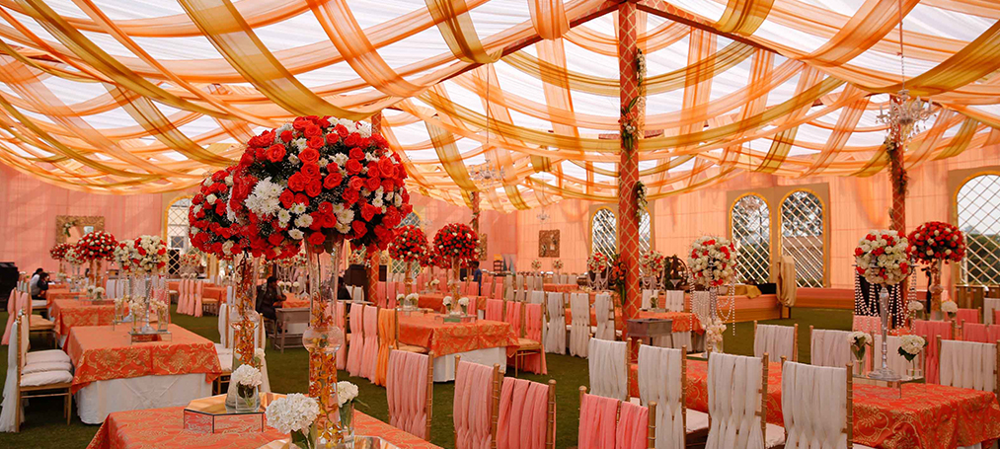

<div class="container project-view">
    
	<div class="row">
        <div class="col-md-8 project-images">
            
            
            
            
            
            
            
            
            
            
        </div>
        <div class="col-md-4">
            <div class="project-info">
                <h2>Koti Resort</h2>

                <div class="details">
                    <div class="info-text">
                        <span class="title">Location</span>
                        <span class="val">Shimla</span>
                    </div>

                    <div class="info-text">
                        <span class="title">Category</span>
                        <span class="val">Luxury Wedding</span>
                    </div>
                </div>
					Koti Resorts is located on a charming hill-top, at an elevation of 6,600 feet above sea-level, offering a spectacular & mesmeric view of the Himalayas.
					<br/><br/>
					It provides a welcome sense of luxury, privacy and serenity, making it an ideal retreat for either a family holiday, a romantic getaway, or a corporate sojourn.
					<br/><br/>
					The resort, with its 54 elegantly appointed rooms & suites, is located a mere 30 minutes ahead of Shimla, between the picturesque town of Mashobra and the world famous Naldehra Golf Course.

                        
            </div>
        </div>
    </div>
</div>